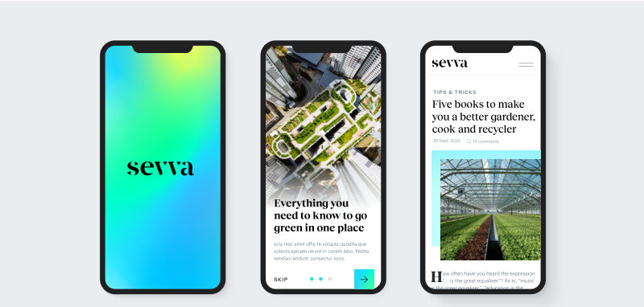
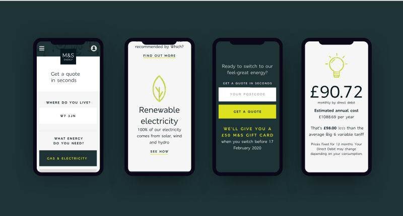
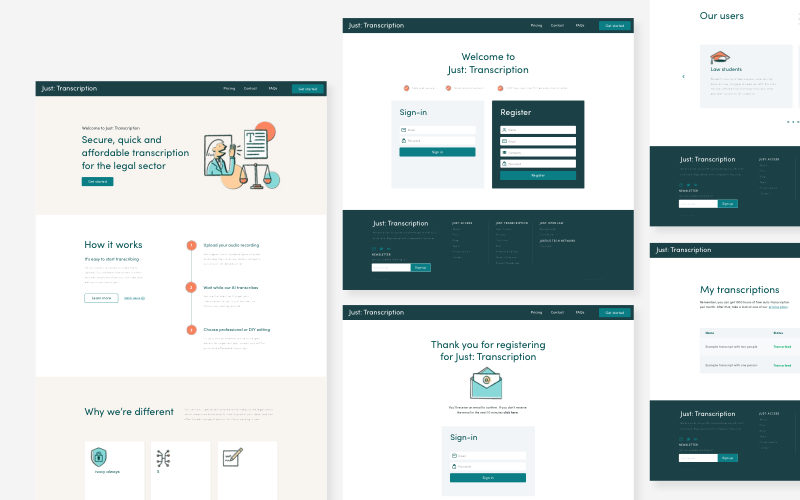
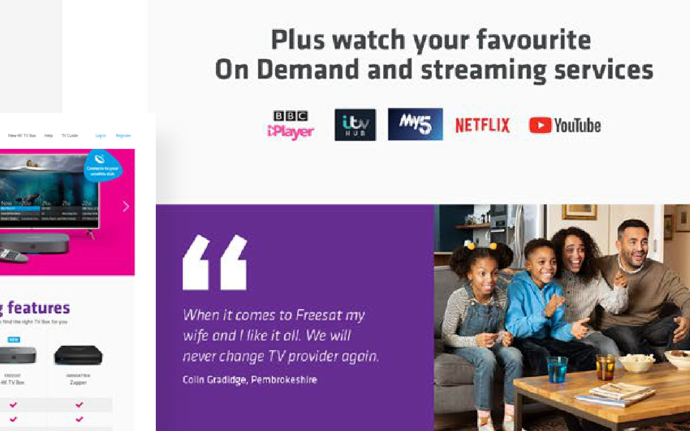
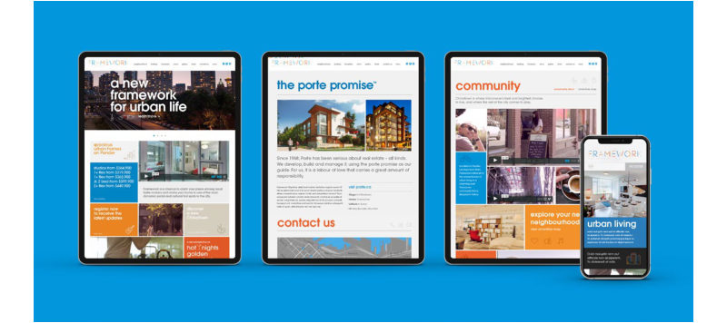

Independent design studio
Studio
Contrary
The work of freelance designer and creative director Shannon Craver.
Work
Selected work.

Streetbees
Bringing cohesion, personality & user delight to a consumer survey app.

Greek National Lottery
Bringing the experience of a Greek high-street institution online.

Sevva
A strong brand to launch a digital publication & app focused on sustainability.

UniFi
Helping an early-stage fintech startup find their voice & designing their first MVP.

M&S Energy
Creating a brand & website for a new sustainable energy offering from M&S.

Just: Access
Refining the product & brand of a machine-learning legal transcription service.

Immediate Media
A brand refresh & new corporate website for the UK’s biggest special-interest media company.

Freesat
Launching a free-satellite-TV brand into direct-to-consumer retail.

Framework
A brand & digital experience for a downtown residential development aimed at first-time buyers.
About
Hey, I’m Shannon — a freelance designer specialising in crafting extraordinary brands & experiences from the ground up.
With over 10 years of experience across branding, digital products and experiential design — in leading agencies and as a freelance designer in the UK, USA and Canada — I’ve built a wide range of skills across many disciplines and industries.
I’m a generalist in the best sense of the word: able to assess and deploy exactly what’s needed, design-wise, for the startups, businesses and agencies I work with — to create work that truly moves the needle.
- Enthusiastic, positive and sociable; calm under pressure
- Versatile, and quick to fit into teams and hit the ground running
- Comfortable across the whole project — strategy, research, design, prototyping, testing and implementation
- Confident with stakeholder and user-facing presentations and workshops
- Experienced managing, motivating and building design teams
- Set up for remote work from my home studio
Selected clients
- American Cancer Society
- Aritzia
- Barclay’s
- BBC
- British Airways
- Compare the Market
- Holland & Barrett
- Lululemon
- Marks & Spencer
- McDonald’s
- Nintendo
- PizzaExpress
- Streetbees
- Tesco
- Tourism Canada
- UK Ministry of Justice
Capabilities
- Interface design (UI)
- Experience design (UX)
- Product design
- Web design
- Prototyping
- Design systems
- Design sprints
- User research
- Visual design
- Brand design & strategy
- Building design teams
Experience
Education
Testimonials
Kind words from people I’ve worked with.
Shannon is one of those rare talents that has a combination of exceptional design skills alongside a great ‘can do’ attitude. From large scale branding projects to smaller day to day tasks she’s got the goods to deliver whatever is required.
Shannon is a superstar designer!
Our new brand brings a vibrancy to the impact space whilst being respectful of the tough work and challenges we face in delivering healthcare in low-income countries. Many people now comment on our rebrand and the reception has been fantastic.
Strategically focused, she was also able to develop concepts in a smart and collaborative way. She was as technically adept in digital design as she was in print, and also positive, enthusiastic and focused on problem solving.
Shannon really did go above and beyond, bringing professionalism, excitement and energy to our projects. She really gets the essence of who we are and what we’re trying to achieve.
Shannon’s strength is in her understanding of creative process and the elements required for high-level design. Her kind and pleasant demeanour made tight deadlines and situations manageable.